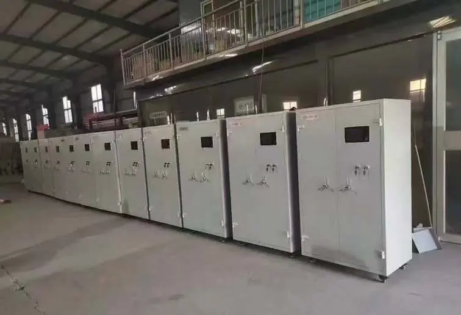
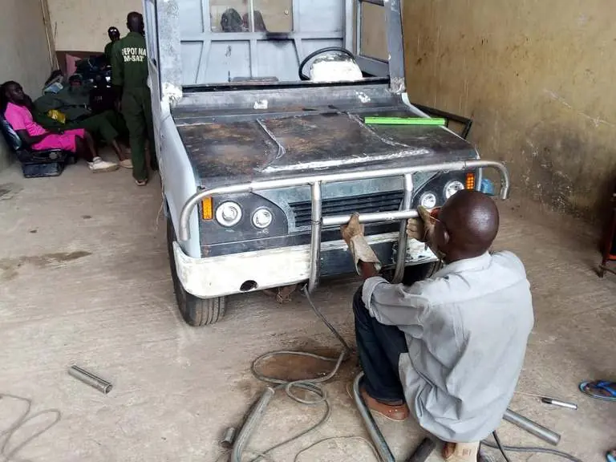
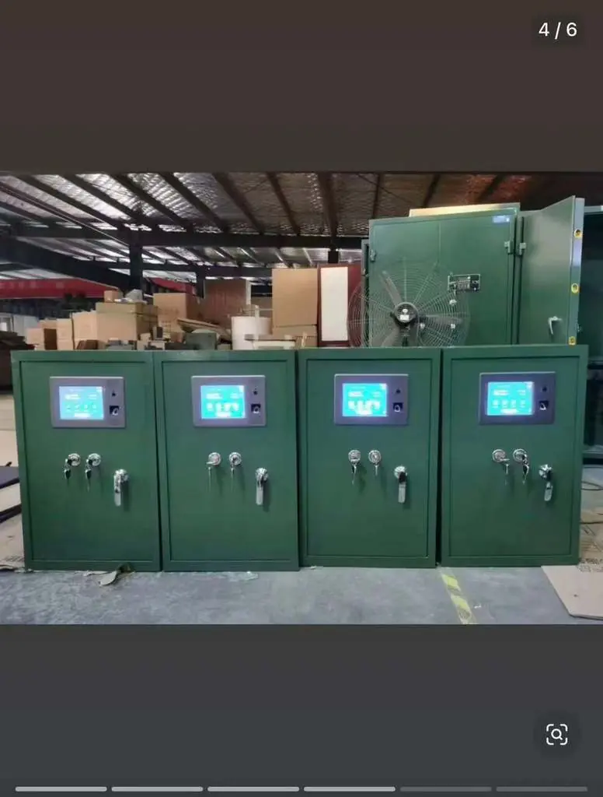

Built in Nigeria. Designed for Nigeria.
A domestic production line for tactical hardware, munitions and unmanned systems, and a practical answer to Nigeria's defence supply challenges.
Capability at home removes dependency
Nigeria's military faces a persistent challenge equipping its forces through imports, hampered by foreign exchange volatility, political diplomacy and government bureaucracy.
PrimeTEK Multi Biz Solutions manufactures a range of tactical hardware, munitions and unmanned systems domestically, from early warning devices and grenades to surveillance drones and locally engineered vehicle components. This local production line stands alongside the company's ISR, counter-UAS and mobility portfolio as a direct, practical answer to Nigeria's defence supply challenges.
Shorter lead times
Production close to the end user means faster delivery and resupply.
Supply security
Less exposure to export restrictions, diplomacy and foreign-exchange swings.
Local support
Maintenance, spares and upgrades handled by engineers in-country.
Local jobs & skills
Building a Nigerian defence-industrial workforce and supply chain.
PrimeTEK Locally Manufactured Products
PrimeTEK's Nigeria-based production line manufactures the following items at the standard monthly capacities below.
| S/N | Item | Category | Max monthly production (standard) |
|---|---|---|---|
| 1 | Remote Weapon Station (Standard Light Category) | Systems | 30 units/month |
| 2 | UAV Payload Release System (Cargo Hook) | Unmanned systems | 180 units/month |
| 3 | UAV Payload Release System (Drum Release) | Unmanned systems | 60 units/month |
| 4 | Kamikaze Drone | Unmanned systems | 2 units/month |
| 5 | Modified B2 Bomber (Drone) | Unmanned systems | 1 unit/month |
| 6 | Handheld Emergency Tripflare | Munitions & signalling | Up to 1,200 units/month |
| 7 | Stun Grenade | Munitions & signalling | Up to 1,200 units/month |
| 8 | Smoke Grenade | Munitions & signalling | Up to 1,200 units/month |
| 9 | Pre-Frag Anti-Personnel Hand Grenade | Munitions & signalling | Up to 1,200 units/month |
| 10 | Anti-Vehicular Landmine | Munitions & signalling | Up to 1,200 units/month |
| 11 | PrimeTEK Knockout Sleeping Gas | Munitions & signalling | Up to 1,200 units/month |
| 12 | PrimeTEK Surveillance and Attack Drone | Unmanned systems | Up to 5 units/month |
| 13 | PrimeTEK Kamikaze Suicide Drone | Unmanned systems | Up to 5 units/month |
| 14 | Thunder Flash Stun Grenade | Munitions & signalling | Up to 1,200 units/month |
| 15 | PrimeTEK Rocket Missile | Munitions & signalling | Up to 30 units/month |
| 16 | PrimeTEK 1kg Drop Bomb | Munitions & signalling | Up to 30 units/month |
Capacities shown are standard maximums. Surge production, custom configurations and delivery schedules are agreed per contract.
Production at scale
Inside the workshop



Place an order or request a quotation
Tell us what you need, the quantities and the delivery timeline. Our team will confirm availability, lead times and documentation requirements.